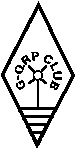

THE EUROPEAN CW ASSOCIATION
EUCW NOVICE AWARD

|  |
THE EUROPEAN CW ASSOCIATIONEUCW NOVICE AWARD |
|
Eligibility
This Award is available to any radio amateur who, during the
first 12 months of holding an amateur licence contacts 50
different stations while using CW, for which QSL cards have been
received. An applicant does not have to be a member of an
EUCW club to qualify for an EUCW Novice Award.
Classes of Award
Class A - QRP must be used and the applicant
must enclose with his/her application a signed statement that
when making the contacts listed the power used did not exceed 5W
output.
Class B - Any licensed power may be used.
Applications
To obtain the award, send a log of the 50 contacts made, verified
by one other licensed amateur stating that he/she has seen and
checked the cards on the list. The applicant's own name and
address must be written clearly on the application. Do
not send QSL cards.
Send the claim, together with three first class stamps (UK
applicants), or three international reply coupons (IRCs) from
overseas, to:
G-QRPC Awards Manager,
A.D. Taylor, G8PG,
37, Pickerill Road,
Greasby, Merseyside CH49 3ND,
England.